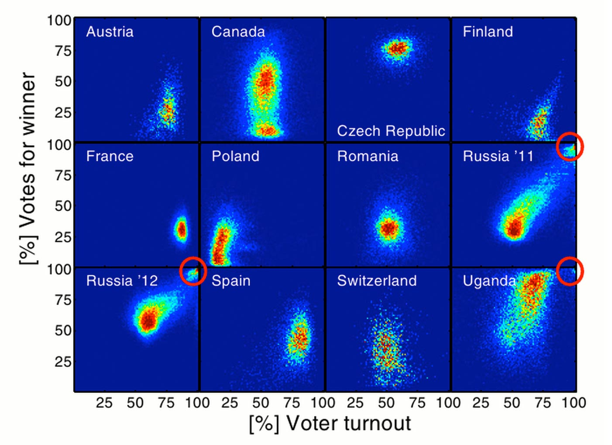

Designing Interactive Data Visualization
Slides: collide.riot.industries/slides
1. Why do we care about data visualization?
We're pretty good at recording data.
Too good, probably.
- On an average day, Twitter generates about 500 million tweets. That's about 15 times the number of books in the Library of Congress
- In August 2010, Eric Schmidt, former CEO of Google, said that between the beginning of time and 2003, humanity generated about 5 exabytes (5 x 1018 bytes) of data.
- Now, we generate that much data roughly every 2 days.
These mountains of data add up. We record much more data than we can possibly analyze 1:1 in a lifetime.
Even when we aggregate data, it's not always clear what's going on.
And this is sort of a bummer, because
Data is only valuable when it's understood.
Anscombe's Quartet
Anscombe's Quartet

Statistical Detection of ... ?

Statistical Detection of Election Fraud
Visualization lends meaning to raw data.
2. Data Journalism
and Critical Thinking
- In addition to recording data at an unprecedented rate, we've become very good at exposing it as well.
- City open-data policies, like Halifax Open Data
- Scientific data, like The 1000 Genomes project
- APIs as interfaces to otherwise obfuscated data, like Census Reporter
- Github repositories of data behind investigative news, like FiveThirtyEight's Data
- This access provides us with the means to think critically about the world around us.
- If you know even basic spreadsheet use, you can start using the aforementioned data to research the subject of your choice.
- Journalists have taken this to its logical next-step: Data-Driven investigative journalism.
- Sites like FiveThirtyEight and NYTimes' The Upshot give us ways to think about their data.
- In the absence of the ability to code and analyze the information ourselves, Data-Driven Journalism sites do us a great service when they provide methods for us to interact with their data.
- A mainstay of Data Journalism is the pairing of a story with the understanding that a reader's interpretation of it may differ.
- In practical terms, this means that the best data journalism allows the reader to sort, filter, combine and rearrange data through a visual interface.
3. Data Visualization:
Best Practices


- Certain types of visualizations are well-suited to particular data types:
- Bar charts are boring, but well-suited to allow us to quickly determine differences in quantity:
- Sometimes pie graphs are okay for this too, but be warned: at a glance, people don't see area, they see height.
- Treemaps show quantity, plus a sense of hierarchy
- Maps provide several ways to show physical location.


- Maps are particularly versatile because of our common understanding of their expected shape; differences from our expectations let us see a different kind of story:
- This cartogram shows expected popularion by 2300. It is only by changing our previous knowledge of the shape of the world that this has any effect.

- Time-Series charts show how quantitative values change over time:

- Scatter plots show us the differences between things in two dimensions

- Network graphs show us the relationships between things - for example, this map of all of the followers of @CollideHalifax

- But - well-suitedness of interaction in data visualization is harder to pin down.
- Part of the difficulty: Giving users control over data means we can't test every possible outcome.
- This is okay! Letting a user have control of visuals is worth the potential to show your warts.
4. The Qualities of Highly Successful Interactive Data Visulizations
The Guardian - The state of our union is ... dumber

source
Scatter plot/ Time series, Small multiples. Allows user to parse and reveal.
BBC: Scotland Decides
source
Normalized bar chart, Map. Allows user to sort data.
The Guardian - Violence and guns in best-selling video games

source
Radial Bar Graph with edge-bundling. Allows user to filter.
Quick aside: be considerate about how you categorize.

NPR - When are people working?

source
Area Graph. Allows user to visually compare.
Musicians' Deaths by Age

source
Time Series. Allows user to filter based on category.
Visualizing MBTA Data
source
Parallel Coordinates, Maps, Bar and Area. Allows user to explore relative and absolute time, and compare stations/trains.
dc.js
source
All the things.
Githut
source
Small Multiples, Parallel Coordinates, Bar Chart. Allows user to compare languages, and view how they vary over time.
NY Times: How the Recession Reshaped the Economy, in 255 Charts

source
Loose interaction; the act of scrolling shows comparisons between industries. Sparklines. At the bottom, Small Multiples show the fuller picture.
Bloomberg Visual Data: State-by-State

source
Map, Vertical Bar Chart, Time-Series. Allows user to dig deeper and cross-compare state data.
- The primary theme among the interactions presented here is that they allow users to complete a few common, basic actions:
- Sort: Representing the data in different orders can reveal trends otherwise unseen
- Filter: Only show the data that meets certain user-defined criteria
- Compare: Allow the user to take pieces of the whole and see how they relate.
- Why do these visuals feel so compelling, compared to traditional static media, or data in chart format?
- The general pathway to understanding:
- Unstructured Information
- Data
- Structured Information
- Knowledge
- Wisdom
- Visualization helps bridge the gap between Knowledge and Wisdom. Interactivity prompts exploration, and exploration leads to understanding.
- And smarter users = good for everyone.
5. In which I stop using buzzwords and we build something.
Let's get some data.
- In the interest of keeping this accessible, I'll be using as few frameworks as possible. Talk to me later if you want to know what my data workflow usually looks like, but it generally involves Ember.
- We'll be scraping Twitter for followers of @CollideHalifax. If you want to follow along, head over to Your Followers Page.
- Note: Twitter has an API endpoint to let you do exactly this, but in the spirit of extensibility, let's do it manually.
- Using Chrome or Firefox, on your followers page, right-click a user's handle and click "Inspect Element".
- The HTML element you inspected should show up. Note the text in the element, but more importantly, the class:
.u-linkComplex-target
- In your inspector, click the "Console" tab and type the following:
var folks = []; $('.u-linkComplex-target').each(function(){ folks.push('https://twitter.com/'+$(this).text()) })- Now type
folks. You now have an array with as many twitter handles as you'd scrolled down to see, listed by their URL. - Note: if you've scrolled so far that your array shows up condensed, stringify it with
JSON.stringify(folks) - Copy your array and save it to a file called
folks.json
- Right now, we just have an array of follower URLs
- We'd like to get more information about these users: How many times they've tweeted, when they joined, how many followers they've got, etc.
- Lots of ways to do this; Casper/PhantomJS on Node to simulate a browser and grab html data, or more commonly in Python using any number of frameworks: ScraPy, BeautifulSoup, Portia, etc.
- UI-based tools exist that do this as well: Import.io is a good one.
- We're going to use Python's BeautifulSoup library because of its low overhead and the fact we can run it in iPython Notebook
- Grab the gist at gist.github.com/philrenaud
- BeautifulSoup uses urllib2 to read a URL from our file and present it as text output
- We can leverage this in a loop: Python will iterate over our "folks" array, grabbing the HTML content of each one's page, and returning the metrics we care about.
- note the use of class-based document parsing:
soup.find('span', {'class': 'ProfileHeaderCard-joinDateText'})['title']
- At the end of this process (will take a few minutes), an array of parsed folks will be generated, and saved to parsed_folks.json, where each entry looks like the following:
[...
{
"bio": "Data Vis + Ember + D3.js // Cofounder @AffinioInc",
"handle": "phil_renaud",
"name": "Phil Renaud",
"url": "http://riot.industries",
"tweets": [...],
"followers": "1,473",
"location": "Halifax, Nova Scotia, Canada",
"favorites": "1,422",
"following": "926",
"joinDate": "8:48 PM - 8 Apr 2008",
"num_tweets": "3,305",
"avatar": "https://pbs.twimg.com/profile_images/497537241405612032/TqVgj3zv_mini.jpeg"
},
...]
6. Wrangling Data
(Don't worry, the Python part is over now)
- Now that we have our parsed data, you'll notice that some values are great for humans to read, but not necessarily so for computers.
[...
{
"bio": "Data Vis + Ember + D3.js // Cofounder @AffinioInc",
"handle": "phil_renaud",
"name": "Phil Renaud",
"url": "http://riot.industries",
"tweets": [...],
"followers": "1,473",
"location": "Halifax, Nova Scotia, Canada",
"favorites": "1,422",
"following": "926",
"joinDate": "8:48 PM - 8 Apr 2008",
"num_tweets": "3,305",
"avatar": "https://pbs.twimg.com/profile_images/497537241405612032/TqVgj3zv_mini.jpeg"
},
...]
Clean up your numbers with Numeral.js
this.followers = "1.4k";
numeral().unformat(this.followers.toLowerCase());
//1400
Convert your dates to timestamps with Moment.js
this.joinDate = "8:48 PM - 8 Apr 2008";
moment(this.joinDate).format('X')
//1207687680
Convert those timestamps to "Days ago" with moment.duration() and moment.asDays()
moment.duration(new Date().getTime() - 1207687680*1000).asDays().toFixed(0)
//2388
Wrangled Data:
collide.riot.industries/wrangled-data.html
(Did you find yourself?)
- Cool! Takes about a second to load ~1500 records
- All our stats are there, and now cleaned up ("days active" rather than the original join date)
- Let's add some basic interactivity
7. Adding User Controls
Sorting
- We can leverage Underscore.js ( or Lo-dash ) to let the user control the order in which we present our data:
function sort_by(property){
folks = _.sortBy(folks, function(user){
return user[property] ? user[property] : 0;
});
}; //sort_by
[].reverse() can be used with no framework overhead.Sorted Data:
collide.riot.industries/sorting.html
Filtering
- While 1500 records is pretty small in data science terms, there will be times where a user only wants to analyze a small subset of them.
- Let's allow the user to filter on Less than, more than, or exactly a value of any of the properties we just sorted on:
Filtering
- Underscore provides the
_.filter()function; let's leverage it to return better-tailored data:
function filter_by(operator, property, val){
folks = _.filter(folks, function(user){
if (operator == 'less_than') {
return user[property] < val;
} else if (operator == 'exactly') {
return user[property] == val;
} else if (operator == 'more_than') {
return user[property] > val;
}
}); //_.filter
}; //filter
Filtered Data:
collide.riot.industries/filtering.html
Comparisons
- A neat thing we can do is calculate how any of our numeric values relate to one another.
- For any given user, how many followers do they have per day they've been on twitter? How many favorites per tweet?
- We can provide a user with an interface to pick any two metrics, and create a new metric on the fly that compares them:
function compare(p1,p2){
folks = _.sortBy(folks, function(user){
user.relative = user[p1] && user[p2] ? (user[p1] / user[p2]) : 0;
user.relative_terms = p1 + ' per ' + p2;
return user.relative
});
}; //compare
Comparisons
- Since we're tabulating this new comparison metric on the fly, we may as well gather some meta-information about it.
//get the average by using underscore's _.reduce and _.pluck
meta.average = (_.reduce(_.pluck(folks, 'relative'), function(memo,it){ return memo+it; }) / folks.length).toFixed(2);
//find the lower and upper bounds with _.min and _.max
meta.min = (_.min(_.pluck(folks, 'relative'), function(it){ return it; })).toFixed(2);
meta.max = (_.max(_.pluck(folks, 'relative'), function(it){ return it; })).toFixed(2);
//find the length of the potentially-filtered dataset
meta.size = folks.length
Comparable Data:
collide.riot.industries/comparisons.html
Adding Visuals
- Since we're now providing methods compare data points across two dimensions (our comparables), an appropriate data visualization method to use would be the Scatter Plot.
- SVG is well-suited to represented data-driven graphics like this on the web. D3.js is the best available tool for manipulating SVG in the browser.
- D3's not just for making charts; the range of potential applications is vast.
- For a very good intro, check out square.github.io/intro-to-d3
Adding Visuals: Scales
- Some of our data is of very narrow range (Length of chararacters in a user's bio: 0 - 200); others are very wide (followers: 5 - 980,000). Because of these wide ranges, it's sometimes appropriate to determine if a linear or logarithmic scale is needed.
- D3 has methods for this - a 100-pixel-wide linear-scale graph will have its 0th pixel and 100th pixel mapped to the min and max values of your dataset, respectively.
- But for a log-scale graph, D3 lets us set a domain and range to handle positioning. Check out a logarithmic X-scale:
// Provide each graph point as [X,Y]
var dataset = _.map(folks, function(user){
return [user[p1], user[p2]]
})
// Plot to a log scale mapped to 0-100
xScale = d3.scale.log()
.domain([d3.min(dataset, function(d) { return d[0]; }), d3.max(dataset, function(d) { return d[0]; })])
.range([0,100]);
Adding Visuals: Adding a Linear Regression / Trend Line
- Since we'll be plotting many values along an X/Y plane, we have the opportunity to draw a trend line.
- A javascript library called Simple Statistics is light-weight and gives us the power to create linear regressions from our data:
// Derive a linear regression
var lin = ss.linear_regression().data(dataset).line();
svg.append("path")
.datum(lindata)
.attr("class", "reg")
.attr("d", line);
Visual Data:
collide.riot.industries/visual-data.html
So that's how I give users interactive control over their data.
8. Addendum: All the wonderful, terrible things I now know about you.
- Earlier, I showed a network graph visualization:
- Find it at collide.riot.industries/network.jpg
- This graph is made up of the 1500 people who follow @CollideHalifax, and presents them each as circles (nodes).
- Every relationship between these people is also explored, by checking their followers pages. we can see whether their followers also follow @CollideHalifax. If they do, we draw a line between them.
- The more lines you have drawn to you, the bigger your circle/label are in the graph
- I then ran a modularity algorithm to determine how the 1500 or so people organized themselves. It found 5 basic clusters.
Yellow = Music Fans
Blue = Halifax Startups and Tech
Orange = Arts and Culture
Teal = Local Companies and Brands
Pink = Halifax Locals and Venues
- Note the relative proximity of nodes of differing colors to one another.
- @innovacorp straddles the line between startups and local companies
- @aceburger is in the "locals and venues" modularity class, but mingles with the Music Fans cluster - probably has to do with people following them for info about bands playing at Gus' Pub, etc.
- The relative proximity of nodes is generated in Gephi using a pair of force-directed algorithms: OpenOrd and ForceAtlas2
- Come talk to me later if you want to talk more about network graph visualization - it's my jam.
Affinio
- Affinio is a tool for analyzing groups on social networks like Twitter. Lets us run clustering algorithms to see how niches, like the 5 above, interact.
- Helps us answer questions like "Who influences local Startup employees?"
Affinio
- or "What links are Halifax locals sharing?"
Affinio
- or "What are Halifax restaurant-goers talking about?"
Tools like this give users the opportunity to build tiny data labs.
Letting users drive interactive data = democratization of information
Thanks!
Slides: collide.riot.industries/slides
Little Data Lab: collide.riot.industries